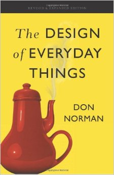
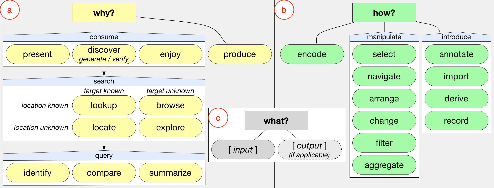

Why & How? M. Adil Yalçın
Baltimore Tableau Users Group Meeting
January 15th, 2015
January 15th, 2015
Hello!
My early work : Technology focused
3D Graphics
3dPhone Project, 3D Displays, '08-'10
3dPhone Project, 3D Displays, '08-'10
Point Sampling
GPU programming, High-Performance Computing
GPU programming, High-Performance Computing
Interfaces to Data
What am I thinking about?
Tools
What's the purpose of our tools?
What makes a tool good / bad?
What am I thinking about?
What separates our tools?
What separates our tools?
Design
"Design is the conscious effort to impose a meaningful order."
Victor Papanek
Victor Papanek

The Design of Everyday Things
by Donald Norman
The Design of Everyday Things
by Donald Norman
Many features, yet simple and intuitive.
Disclaimer: I do not use an iPhone.
Not the first touch-screen phone.
Its success was more than its technology.
It was with -design-.
Its success was more than its technology.
It was with -design-.
Design ≠ what you do.
Design = how you do.
Design = how you do.
What am I thinking about?
Why design?
Why design?
People
Mind + cognition + context.
The greatest thing ever means nothing if we cannot use it.
Tools
Design
People
How we do ________ How we think
Tools (+ design) influence how we observe & how we think.
Tools can:
- Make us conform to them (wider gap, ......), or
- Guide us and expand our horizons (smaller gap, ).
When you want to understand your data,
do you think of "chart types"?
do you think of "chart types"?
Today, I feel like it's a scatterplot day.
Excel Charting Documentation
(text, text, scroll, scroll... boring! )
Excel is not the only offender (for visualization):
Raw, by DensityDesign
Quadrigram
"Charting" tools, libraries,
lists

by Jon Schwabish (PolicyViz)
Visualization = Purposefully organized data
Visualization should focus on data & tasks & people.
With a good tool:
You focus on your data & tasks.
The interface disappears.
Visualization & your dialogue with data just 'works'.
- You don't need to decide on how to visualize.
- The tool knows the best practices, not you.
You focus on your data & tasks.
The interface disappears.
Visualization & your dialogue with data just 'works'.
Choose attributes first. Then, Show Me.
You see the relevant charts (in color) based on data properties you selected.
Shorter gap between
how you think how you do.
Visualization as a
Goal
- How do I "visualize"?
- Good practices
Should's / shouldn't's - You serve to the visualization.
- How do I understand & communicate data?
- Based on fundamentals & data & task
- Visualization serves to you.
Visualization for
Designed for:
- Specific Dataset
- Direct attention to specific trends
- Tell a story
- Constrained interaction
Designed for:
- Open-ended,
- Flexible,
- Iterative use
- Many-views
- Self motivated
Ask to Echo / Siri / ... (?)
- Which month did we have more sales? March
- What product type did we produce the most? Chairs
- How did our sales change this year? +10% increase.
- Which managers have highest performing team? Dave
- ...
- You can only learn what you can ask for!
Visualization gives you more context
& leads to new questions.
You need an interactive, dynamic dialogue
with data interface.

A Multi-Level Typology of Abstract Visualization Tasks, M. Brehmer, T. Munzner, TVCG2013
Re-Vis : Re-mix for data visualizations
Re-design helps us understand why, how, what, and the context.
Redesigning a circular timeline, by Alberto Cairo
Design and Redesign in Data Visualization, by Viégas & Wattenberg
For interactive data exploration
Health Supplements: vs.
Album Reviews: vs.
Employee Salaries: vs.
Selfiecity: vs.
Star Wars Quotes: vs.
I used shapes bc I don't explicitly suggest one is better.
Use. Decide.
Use. Decide.
Just because you can, doesn't mean you should.
FinVis
Companies grouped by market. Sum of market = sum of its companies. Color: change.
A great TreeMap example
FinVis
Companies grouped by market. Sum of market = sum of its companies. Color: change.
Bad TreeMap examples
Nope. Do *not* use treemaps to show large number of values. The name tells its use @idigdata http://t.co/blbJYTVAZm pic.twitter.com/bL93K2I3uV
— Adil Yalçın (@adilyalcin) April 17, 2015 Alternative :
(Live Demo)
Data from Zillow's Tableau Dashboard.
Imported to Google Sheets
Live Demo!
yalcinumdedu
adilyalcin.me